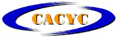

CACYC--Centro Argentino de Capacitacion y Certificacion
Acerca de nosotros

SOMOS MÁS QUE UNA EMPRESA DE GRÚAS. SENTIMOS Y VIVIMOS GH. NUESTROS
ORÍGENES A mediados del siglo pasado, alimentados por la necesidad de
una sociedad que se recuperaba de sus propias contradicciones, cuatro
hermanos pusieron en marcha un negocio familiar para cubrir sus
necesidades de supervivencia y la sana ambición de construir un
proyecto, con las personas como centro de toda su acción. 60 años y
120.000 grúas después, seguimos siendo los mismos. Nuestra empresa
mantiene firmes los pilares de sus fundadores, basados en la
honestidad, el buen hacer y el afán de traspasar valor a sus clientes.
Ahora GH es una empresa líder en el sector de la elevación, con
productos innovadores, con clientes líderes en los cinco continentes y
en continua evolución para adaptarse a las nuevas demandas y
tecnologías que nos hacen más globales, accesibles y competitivos.
INVIERTA EN LA CAPACITACION PROFESIONAL DEL OPERADOR DE GRUA